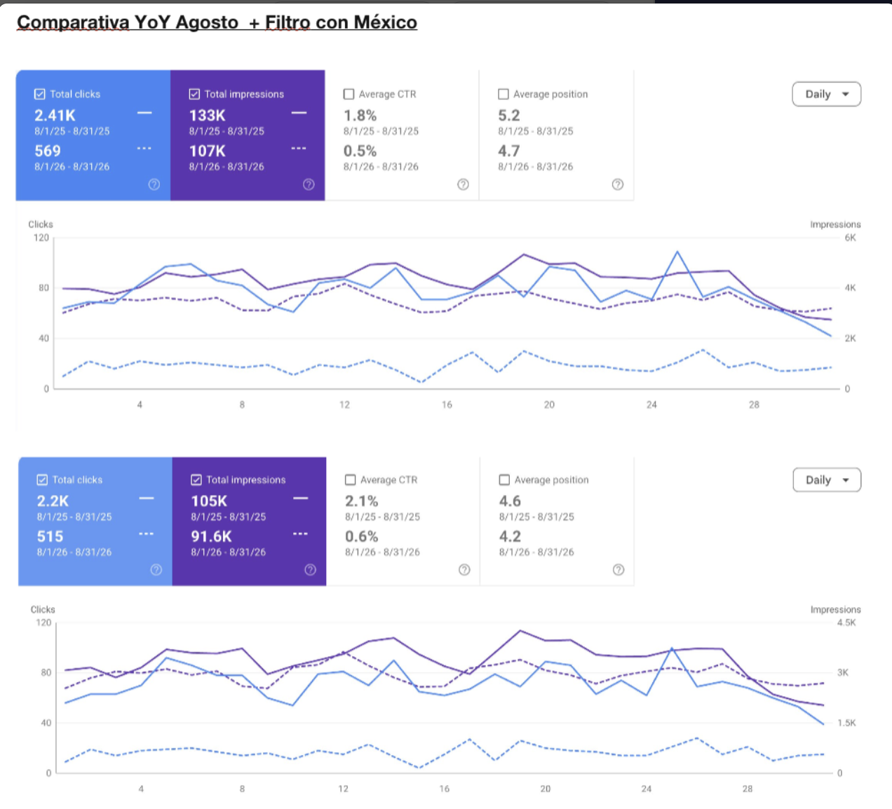
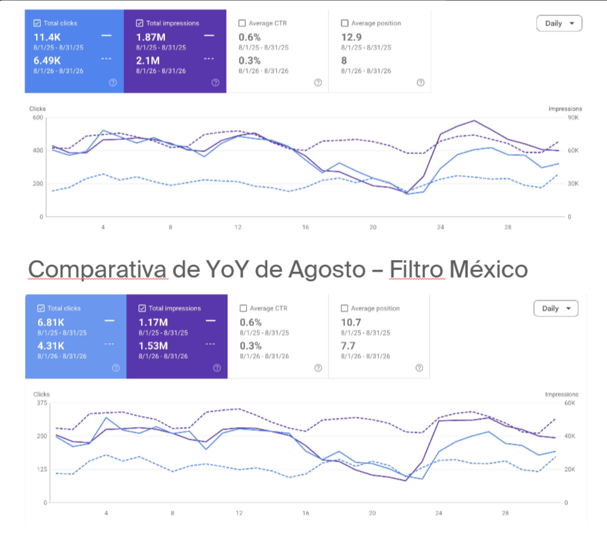

Spoonity — Plataforma de fidelización · América
Auditoría técnica completa, gestión de hreflang y canonicals durante migración. Optimización on page y off page. Consolidación de GA4 + GTM para eliminar duplicación de eventos. Producción de 21 artículos de blog en español y creación de sección de Casos de Éxito. Disavow de enlaces tóxicos e implementación de monitorización GEO.
Enfabebe · Chocomilk — Reckitt México
Auditoría del trabajo SEO previo. Detección del bug de canonicals en Chocomilk. Optimización de URLs e interlinks en Enfabebe. Gestión de tickets técnicos para dev (Core Web Vitals). Propuesta de PR digital. Reportes mensuales y semestrales con contexto México vs global. Monitorización de presencia en IA generativa.


EON Technology — Redes y conectividad · Colombia / LATAM
Diagnóstico del impacto de traducción sin hreflang y plan de recuperación. Auditoría SEO completa con análisis competitivo. Optimización on page. Producción de blog estratégico con keywords de larga cola. Linkbuilding y mejora de CTR mediante optimización de títulos y metas.
Doctor Heal Online — Medicina integrativa · México
Corrección técnica post-migración: páginas rotas, redirecciones, indexación. Reestructuración del sitemap. Configuración de sitelinks. Optimización SEO on page: keywords, metatags, interlinks y ALT.